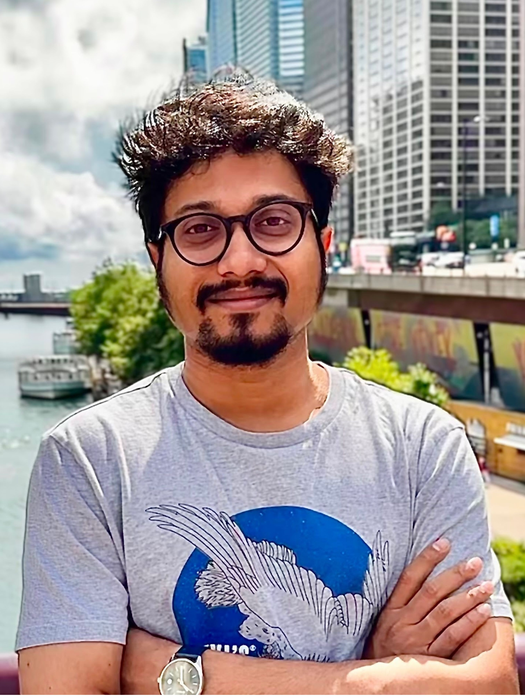
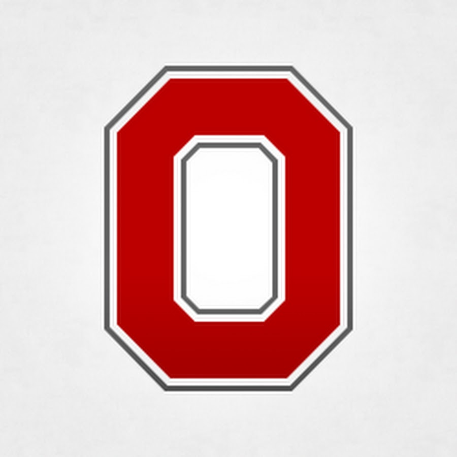
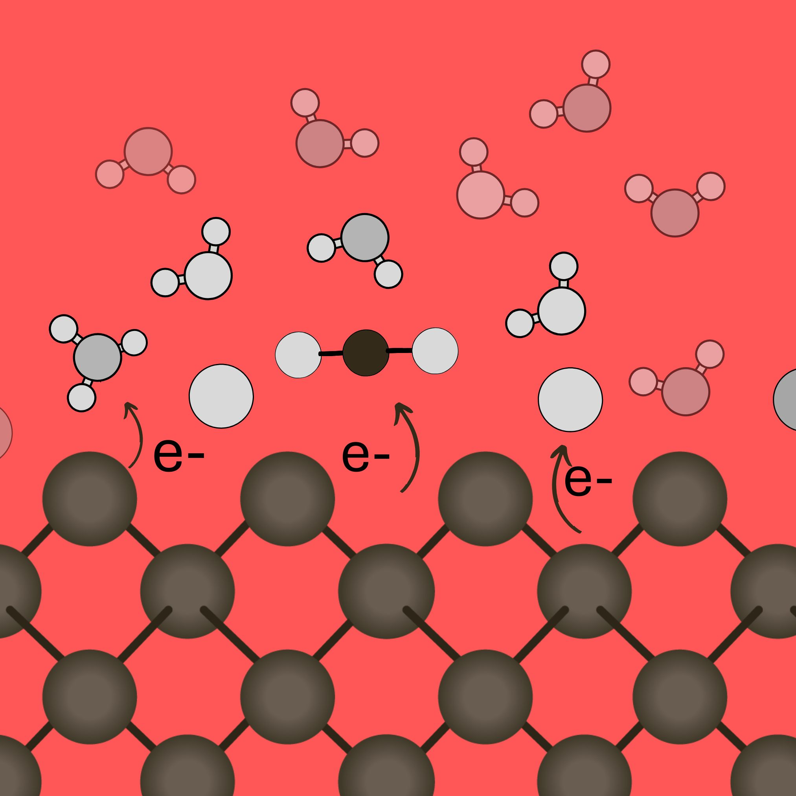
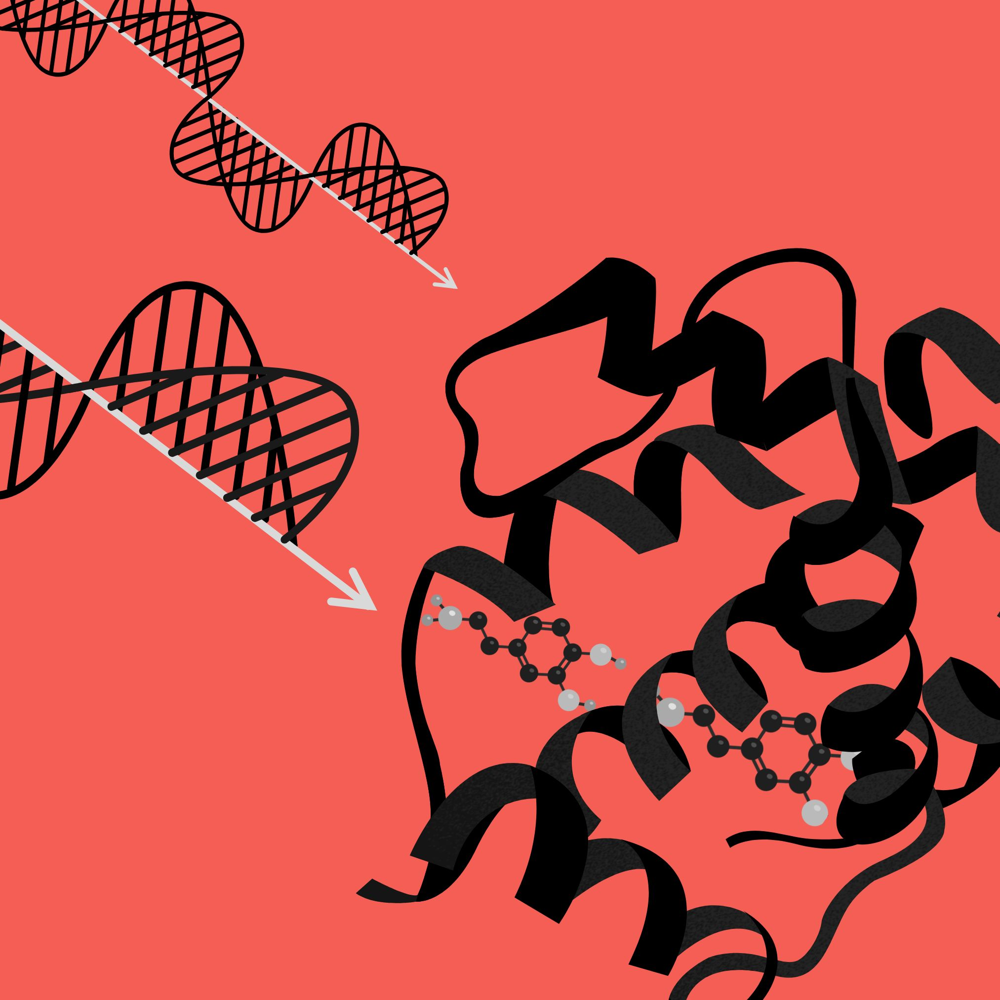

We investigate the coupled dynamics of electrons, atomic nuclei, and electromagnetic fields at the crossroads of molecular and materials science. We develop new simulation techniques combining ideas of theoretical chemistry and condensed matter physics.



Solid-liquid and solid-solid interfaces govern modern energy conversion, yet their microscopic charge-transfer (CT) mechanisms remain fundamentally unresolved. We develop machine-learning approaches for non-adiabatic CT simulations at electrochemical interfaces.
Coupling between electronic and lattice degrees of freedom governs the performance of candidate materials for quantum computing and sensing applications. We develop quantum embedding approaches to describe coupled quasiparticle dynamics in magnetic quantum materials.

Time-resolved spectroscopy of biological and solid-state materials reveals intriguing environmental effects that critically shape reaction pathways at finite-temperatures. We develop first-principles quantum dynamics methods to simulate ultrafast electronic and vibrational spectroscopy.
Sohang Kundu is an incoming Assistant Professor in the Department of Chemistry and Biochemistry at The Ohio State University. Sohang grew up in India, and completed his BSc. from Presidency University in 2015 and MSc. from IIT Bombay in 2017. He then moved to the US for graduate studies, and obtained his PhD in 2023 from the University of Illinois Urbana Champaign, working with Prof. Nancy Makri. From 2023-2026 he was a postdoctoral research scientist in Prof. Tim Berkelbach's group at Columbia University. Sohang will join the faculty at OSU in July, 2026.
Want to know about Sohang's mentorship style?
Two of his former mentees,
Diana Chamaki (d.chamaki@columbia.edu) and
Ellie Mackintosh (eem2203@columbia.edu),
have graciously offered to answer any questions you have by email or on Zoom.
Feel free to reach out to them!
We are actively recruiting graduate students and postdocs. Come build the group with me!